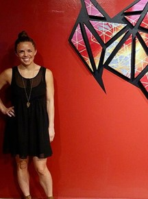
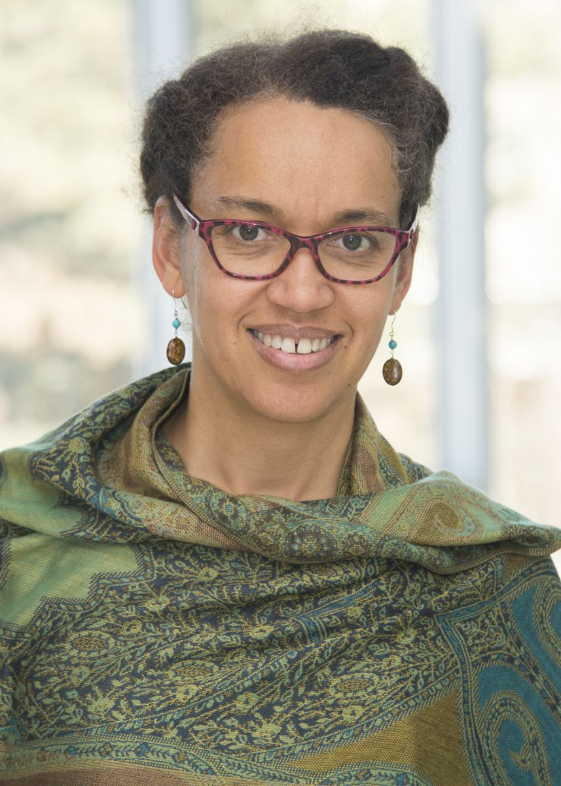
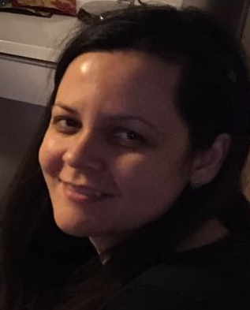
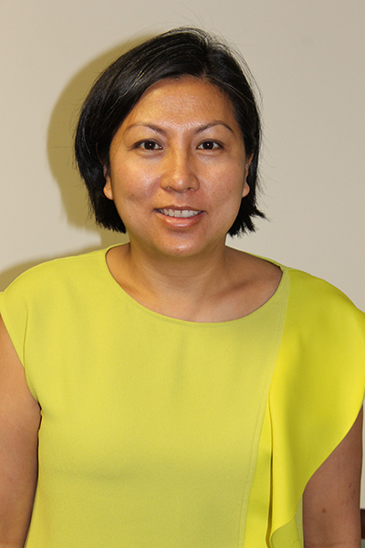
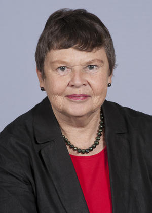
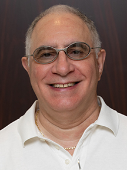

Walter F. Edwards
Ph.D, Director/ Chair
Born in Guyana, South America, Dr. Edwards earned a BA in English at the University of Guyana. He continued his education in England, earning an MA in Linguistics in English Language Teaching at University of Lancaster, England, and his Ph.D. in Language and Linguistics at University of York, England. At Wayne State University Dr. Edwards teaches several courses in linguistics. His research interests and publications include Guyanese Creole studies, African American Vernacular English, the sociolinguistics of rap lyrics and language and culture.

Cheryl Ball
Director, University Libraries
Cheryl E. Ball is Director of the Digital Publishing Collaborative at Wayne State University Library. Since 2006, Ball has been editor of the online peer-reviewed open-access journal Kairos: Rhetoric, Technology, and Pedagogy, which exclusively publishes digital media scholarship. Her recent research in editorial workflows and digital publishing infrastructures can be found in multiple journals and edited collections, as well as on her personal repository, http://ceball.com. She is the Project Director for Vega, an open-access multimedia academic publishing platform, and serves as the executive director of the Council of Editors of Learned Journals.

Khari Brown
Associate Professor, Sociology
R. Khari Brown, an associate professor of sociology at Wayne State University, is a leading expert of religion and American politics. He is also an adjunct research scientist at the Institute for Social Research at the University of Michigan where he develops national surveys on race, religion, and politics. He serves on the board of the Religious Research Association and the editorial board of the Politics and Religion Journal. His published work examines race differences in how attending worship settings in which clergy and lay persons discuss political matters reinforces beliefs about the American government’s role in addressing; poverty, racism, immigration, criminal justice, and defense issues. This work appears in numerous academic journals and is featured on NPR’s The Academic Minute.
Nicole Coleman
Assistant Professor, CMLLC
Born and raised in Germany, Nicole Coleman has always been interested in literature, history and cultures. During her undergraduate years, she spent one year at Charles University in Prague, Czech Republic where she studied transitions to democracy. After she received her M.A. in Political Science (Development Policy), Modern History and Comparative Literature from the University of Bonn, Germany (2007), she spent one year in Montenegro where she taught German language and culture classes at the local university and traveled widely. Back in Germany, she taught German to immigrants in Berlin. Nicole was able to connect all these different interests (human rights, interculturality, migration, and literature) that developed through her studies and travels in her Ph.D. studies and continues to research and teach in these areas at Wayne State University. Nicole has been a member of Wayne State's Department of Languages, Literatures, and Cultures since August 2015.

Heather Macali
Assistant Professor, Art & Art History
As a contemporary fiber artist Heather has focused primarily on color, pattern, texture, distortion and memory. Her use of color and pattern arose out of childhood experiences steeped in the popular material culture of the Midwest in the 1980s and early 1990s. Macali’s work has recently been published in the books Digital Jacquard Design by Julie Holyoke and Textiles: The Art of Mankind by Mary Schoeser. She worked in the fashion industry for four years as a textile designer at Abercrombie and Fitch and Limited Brands. Macali grew up in Munroe Falls, Ohio and received her Bachelors of Arts in Crafts from Kent State University. She continued her art research and development at the University of Wisconsin-Madison receiving her Masters of Fine Arts in Textiles in 2009. Macali currently resides in Detroit, Michigan working as an artist and a professor at Wayne State University.
Alisa Moldavanova
Assistant Professor, Political Science
Alisa Moldavanova is an Assistant Professor of Public Administration in the Political Science Department at Wayne State University, where she teaches courses on the management of public and nonprofit organizations, public personnel management, and ethics in public policy and administration. Dr. Moldavanova's research areas include public and nonprofit management, organization theory, and ethics and sustainability studies. She is currently conducting research on the sustainability of cultural organizations in the Detroit Metropolitan Area and the State of Michigan, which includes research on the contributions of nonprofit cultural organizations to community sustainability, and how arts and culture organizations use collaborative strategies and inter-organizational relationships to cope with external stress and achieve longer-term sustainability.

Lisa Ze Winters
Associate Professor, English
Professor Winters has undertaken the hard work of teaching in the general education program. Although she sets very high standards in her Introduction to African-American Literature course, students praise her depth of instruction and rigor. Professor Winters excels as a mentor and teacher, bringing vital new energy to an important area of the department's curriculum.

Nadejda Marinova
Associate Professor, Political Science
Nadejda K. Marinova is an Associate Professor of Political Science. She joined the Department of Political Science at Wayne State University in 2012, after serving as a Dornsife College Postdoctoral Distinguished Teaching Fellow at the University of Southern California (USC). From August 2012 until August 2018, Dr. Marinova was an Assistant Professor of Political Science at Wayne State University.

Andrew Newman
Associate Professor, Anthropology
I am a sociocultural anthropologist whose research combines urban ethnography with anthropological approaches to environmental studies. My interests include urban ethnography, urban ecological issues, urban parks and green spaces, social movements, and the relationship between globalization and the city. In my fieldwork I focus on environmental and urban politics in a multiethnic district of Paris that is primarily populated by residents of Maghrebi and West African origin. I am currently working on two Detroit focused projects: a community-led “People’s Atlas of Detroit” being done in conjunction with Building Movement of Detroit, and a collaborative project with Dr. Yuson Jung on ethical and sustainable food in the city.

Tam Perry
Assistant Professor, Social Work
Tam Perry is an assistant professor in the School of Social Work at Wayne State University. She recently received her PhD in Social Work and Anthropology from the University of Michigan. Her ethnographic research addresses housing transitions of older adults from a network perspective. As health, mobility and kin and peer networks alter, she explores how older adults contemplate their homes and its contents. She studies housing transitions because, while aging in place is often preferred and cost-effective, inevitably some older adults will undertake the emotional and physical labor, as well as the negotiation of medical, financial and long-term care infrastructures, involved in relocation. Her research has been supported by the National Institute on Aging, the John A. Hartford Foundation, the University of Michigan and Wayne State University. She plans to begin a new research project in Detroit on relocation in older adulthood funded by the Michigan Center for Urban African American Aging Research as well as conduct a longitudinal study of older adults who participated in her dissertation project funded by a University Research Grant from Wayne State University.

Carolyn Shields
Professor, Education
My teaching and research focuses on leadership for academic excellence and social justice, including the creation of environments in which democratic organizations can effectively prepare students for participation, engagement and citizenship in a pluralistic civil society and global community. While recognizing the importance of contributing to a body of theoretical knowledge, I am also committed to research that has the potential to improve leadership practice and educational policy, and that contributes to a better understanding of how school leaders in diverse and multicultural contexts can create inclusive teaching and learning environments. Through my scholarly efforts I seek to help leaders understand that social justice involves facilitating the academic success of students as well as attending to the impact of inequitable conditions in the wider society.

Steven Winter
Professor, Law
Steven L. Winter joined Wayne State University Law School in 2002 as the Walter S. Gibbs Professor of Constitutional Law. In May 2017 he was promoted to distinguished professor - the highest rank awarded by the university. Before coming to Wayne Law, he was a member of the faculty at Brooklyn Law School (1997-2002) and the University of Miami School of Law (1986-1997). He also has taught at American University's Washington College of Law and the Cardozo, Rutgers-Newark and Yale law schools.